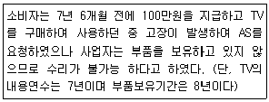
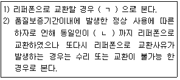
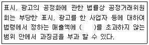
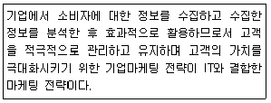
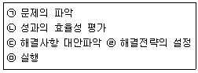
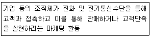
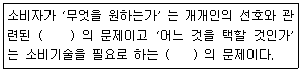
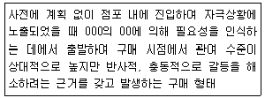

소비자전문상담사-2급 (2014-03-02 기출문제)
1과목: 소비자상담 및 피해구제
1. 기업 고객 상담의 특징과 역할이 아닌 것은?
- 소비자의 교섭력 증대를 통한 공정한 합의안 도출
- 소비자의 욕구파악과 정보제공
- 고객 만족을 통한 재 구매 확대
- 기업에 대한 소비자의 이미지 향상
(정답률: 알수없음)

2. 기업의 소비자상담실의 업무내용으로 적합하지 않은 것은?
- 소비자의 불만 및 피해사랑의 접수 및 처리
- 기업을 대표로 한 홍보 및 언론 플레이
- 소비자 불만 혹은 피해 원인을 규명하고 해당 부서에 이를 통보
- 소비자 문제에 해결의 효율적 방안에 대한 사내교육
(정답률: 알수없음)
3. 다음 사례에서 소비자분쟁해결기준에 따를 경우 사업자가 소비자에게 지급해야할 금액은 얼마인가?

- 0원
- 50,000원
- 93750원
- 100,000원
(정답률: 알수없음)
4. 아웃바운드 상담과 비교한 인 바운드 상담에 관한 설명으로 틀린 것은?
- 통화량을 예측하기 어렵다.
- 목표달성에 대한 부담이 적다.
- 고객의 욕구를 파악하기 어렵다.
- 컴플레인으로 인한 스트레스가 많다.
(정답률: 알수없음)
5. 소비자 상담을 해결하기 위한 분쟁조정제도의 장점이 아닌 것은?
- 소송에 비해 신속하다.
- 비용이 상대적으로 저렴하다.
- 당사자의 이익을 충족하는 다양한 결론을 내리는데 적합하다.
- 분쟁해결의 결론이 제 3자에 의하여 강제된다.
(정답률: 알수없음)
6. 소비자 상담사가 소비자에게 관심을 기울일 때 사용할 수 있는 기술로 가장 거리가 먼 것은?
- 상대방과 정면으로 마주 대한다.
- 이따끔씩 상대방 쪽으로 몸을 기울인다.
- 대화에서 끼어들거나 간섭을 전혀 하지 않는 분위기에서 이야기를 들어주고 수용해준다.
- 대화를 진행하면서 좋은 시선의 접촉을 유지한다.
(정답률: 알수없음)
7. 비언어적 의사소통 기술에 관한 설명으로 옳은 것은?
- 대면 상담 시, 비언어적 요소는 상담에 별 도움이 되지 않는다.
- 말의속도. 음조, 음색 등의 음성적 요소는 언어적 요소에 비해 중요하지 않다.
- 상담 효과를 증대시키기 위해서는 비언어적 요소가 필수적이다.
- 전화상담시 신체의 움직임은 의사소통과 무관하다.
(정답률: 알수없음)
8. 다음 중 비용대비 효율성이 가장 높은 상담채널은?
- 현장방문
- 전화
- 이메일
- FAQ
(정답률: 알수없음)
9. 소비자상담과 관련된 설명으로 옳은 것은?
- 소비자상담 업무는 소비자불만 처리 및 피해구제와 기업의 고객만족 경영을 동시에 실현하기 위해 지속적으로 필요하다.
- 지방자치단체의 소비자상담은 소비자 정책수립을 위한 것이다
- 인터넷 소비자상담은 소비자에게 다양한 정보를 제공하기 위한 것이다.
- 기업의 소비자상담은 기업이미지를 높이고 새로운 고객을 끌기 위한 것이다.
(정답률: 알수없음)
10. 인터넷을 위한 게시판 상담 시 고려할 사항이 아닌 것은?
- 인터넷 게시판을 통한 소비자 상담 시, 컴퓨터 화면상에서 일기 좋도록 답변 시 적절한 여백을 주어야한다.
- 상담에 대한 답변 시, 인터넷에 자주 접촉하여 상담 문의가 올라와 있는지 확인한다.
- 답변의 구성은 간단, 명료하여야하므로 “ 안녕 하세요 ”등과 같은 인사말은 생략한다.
- 소비자가 급한 답변을 원할 경우에는 기재된 개인 연락처로 취한다.
(정답률: 알수없음)
11. 다음 중 구매 전 상담의 역할과 가장 거리가 먼 것은?
- 소비자의 사용목적과 경제상태에 맞추어 최선의 구매를 할 수 있도록 상담 및 조언을 한다.
- 복잡다양화 되어가는 소비생활의 문제점을 해결하고 더 나은 소비생활을 할 수 있는 상담을 한다.
- 소비자의 욕구를 확인하고 효과적인 구매가 이루어지도록 구매 제품을 선정해 준다.
- 소비자의 구매 선택에 도움을 줄 수 있는 정보를 제공한다.
(정답률: 알수없음)
12. 품목별 소비자분쟁해결기준상 모터사이클 부품보유기간으로 옳은 것은? (단, 성능. 품질 상 하자가 없는 범위 내에서 유사부품 사용 가능)
- 1년
- 3년
- 5면
- 7년
(정답률: 알수없음)
13. 소비자 상담사가 갖추어야할 전문적 능력과 가장 거리가 먼 것은?
- 소비자 상담결과에 기초한 제품개발 아이디어 제공
- 피해구제를 위한 조사 및 문서화를 위한 정보관리 능력
- 기업과 유통시스템의 구조 판매 및 광고 활동에 대한 이해
- 소비자 기본법과 관련제도 소비자 봉호 광고 활용에 대한 이해
(정답률: 알수없음)
14. 다음 중 콜센터 상담에 관한 설명으로 틀린 것은?
- 인 바운드 상담을 통하여 고객에게 금전, 시간, 심리적 이익을 제공한다,
- 기업의 소비자 상담실은 일종의 인 바운드 텔레마케팅이다.
- 아웃바운드 텔레마케팅은 기존고객이나 가망고객에게 발신하는 방법이다.
- 전화 상담 중 의문점이 있어도 일단은 고객의 말을 들어주고 상담 후 다시 확인해 본다.
(정답률: 알수없음)
15. 소비자분쟁해결기준으로 틀린 것은?
- 법률로서 제정 . 공표되므로 사업자는 반드시 따라야한다.
- 일반적소비자분쟁해결기준과 품목별소비자분쟁해결기준으로 구분한다.
- 소비자 피해와 관련항 보상 수준의 가이드라인 성격을 갖는다.
- 소비자와 사업자 간의 분쟁을 원활하게 해결하기 위한 최저기준이다.
(정답률: 알수없음)
16. 소비자 상담을 원하는 소비자의 일반적인 욕구와 가장 거리가 먼 것은?
- 관심과 정성을 원한다.
- 적시에 서비스를 제공 받기를 원한다.
- 자신의 문제를 공유하는 것 자체가 목적이다.
- 유능하고 책임 있는 일 처리를 기대한다.
(정답률: 알수없음)
17. 일반적 분쟁해결 기준에 관한 설명으로 틀린 것은?
- 품질보증기간 동안의 수리비용은 사업자가 부담한다.
- 불가피하게 수리가 지연될 때에는 그 사유를 소비자에게 통보한다.
- 환급 금액은 거래 시에 교부된 영수증 등의 가격을 기준으로 한다.
- 할인 판매된 물품의 교환은 정상가와의 차액을 지급하고 교환한다.
(정답률: 알수없음)
18. 소비자분쟁해결기준 중 스마트폰에 대한 설명이다 ( ) 안에 들어갈 알맞은 것은?

- ㉠무상수리 ㉡4
- ㉠신품교환 ㉡4
- ㉠무상수리 ㉡3
- ㉠신품교환 ㉡3
(정답률: 알수없음)
19. 기업이 소비자 상담사의 역할 중 소비자 구매의사 결정단계에서 구매 시 필요한 능력과 가장 거리가 먼 것은?
- 소비자의 구매 심리에 대한 지식을 갖고 있어야한다.
- 기본 소비자를 유지 할 수 있는 능력을 갖고 있어야한다.
- 정보매개지로 판매하고 있는 상품 및 서비스에 대한 지식을 갖고 있어야한다.
- 대체안의 정보로 가격과 판매점 등의 시장정보와 대체안 평가방법에 대한 정보를 제공해주어야한다.
(정답률: 알수없음)
20. 시간과 돈을 절약하기를 언하는 단호한 행동 스타일을 보이는 소비자에 대한 상담대응 전략으로 적절하지 않은 것은?
- 설명을 간결하게하고 해결책을 제공하며 변명을 자제해야한다.
- 정보를 얻기 위해 개방형 질문을 사용해야한다.
- 고객이 도착하기 전에 정보와 필요한 양식 세부적인사항 보증서등을 준비한다.
- 고객들의 질문에 직접적인, 간결한. 사실적인 대답을 해야 한다.
(정답률: 알수없음)
21. 성공적인 상담 진행을 위한 음성적 의사소통 전략으로 옳지 않은 것은?
- 소비자의 이름을 자주 사용한다.
- 간단한 언어를 사용한다.
- 대화내용에 대한 피드백을 주고받는다.
- I 메시지보다 YOU 메시지를 사용한다.
(정답률: 알수없음)
22. 법원에 의한 소비자피해구제의 수단이 아닌 것은?
- 민사조정제도
- 소액심판제도
- 민사소송
- 단체소송제도
(정답률: 알수없음)
23. 자동차에 대한 소비자피해유형에 따른 분쟁해결기준에 대한 설명으로 틀린 것은?
- 자동차의 재질이나 제조상의 결함으로 고장이 발생했을 때 유상수리가 가능하다.
- 품질보증기간이내에 부품 미보유로 수리가 불가능하고 사용상 과실이 발생한 경우 감가상각 비 공제 후 구입가 환급이 가능하다.
- 탁 송 과정 중 발생한 차량 하자의 경우는 보상. 무상 수리. 차량교환 또는 구입가 환급이 가능하다.
- 옵션 용품이 품질보증 기간 내에 하자가 발생한 경우 무상 수리. 구입가 환급 및 교환
(정답률: 알수없음)
24. 구매 후 상담에 대한 설명으로 가장 거리가 먼 것은?
- 구매 후 상담을 상담기관에 따라 분류하면 소비자 단체. 사업자. 행정기관. 소비자원 . 법원 등으로 분류된다.
- 구매 후, 상담을 통한 피해구제 방법 중 가장 바람직한 것은 소비자단체에 의한 소비자 피해구제이다.
- 구매 후 상담은 상담 내용에 달라 불만처리, 피해구제 기타 상담으로 분류된다.
- 구매 전 상담에 비해 상담 건수가 절대적으로 많은 편이다.
(정답률: 알수없음)
25. 다음중 소비자단체의 소비자상담전문성을 향상 시킬 수 있는 방안과 가장 거리가 먼 것은?
- 소비자상담에 대한 정보의 축척
- 자원봉사자 중심의 상담업무 수행
- 상담 업무의 전산화 및 온라인 네트워크 구축
- 구매 전 상담의 확대를 통한 소비자정보 제공의 활성화
(정답률: 알수없음)
2과목: 소비자 관련법
26. 표시, 광고의 공정화에 관한 법률상 사업자가 부당한 표시, 광고 행위를 하는 경우에 공정거래위원회가 명할 수 있는 시정조치가 아닌 것은?
- 해당 위반 행위를 정한 정관의 변경
- 해당 위반 행위의 중지
- 시정 명령을 받은 사실을 공표
- 정정광고
(정답률: 알수없음)
27. 약관규제에 관한 법률상 약관 해석의 원칙이 아닌 것은?
- 신의성실의 원칙
- 작성자 불이익의 원칙
- 객관적 해석의 원칙
- 면책약관 확대 해석의 원칙
(정답률: 알수없음)
28. 방문파내 등에 관한 법률상 다단계 판매원은 자신이 판매하지 못한 재화 등을 반환하기 위해서는 다단계 판매업자에게 계약을 체결한 날부터 언제까지 청약을 철회해야 하는가?
- 7일이내
- 10일이내
- 14일이내
- 3개월이내
(정답률: 알수없음)
29. 제조물 책임법에 관한 설명으로 틀린 것은?
- 제조업자는 제조물의 결함으로 인하여 생명. 신체. 또는 재산 손해를 입은 자에게 그 손해를 배상하여야한다. (당해 제조물에 대해서만 발생한 손해제외)
- 동일한 손해에 대하여 배상할 책임이 있는 자가 2인 이상인 경우에는 연대하여 그 손해를 배상할 책임이 있다.
- 자신의 영업에 이용하기 위하여 제조물을 공급받은 자가 자신의 영업용 재산에 대하여 발생한 손해에 관하여 손해배상 책임을 배제하거나 제한하는 특약은 무효로 한다.
- 제조물의 결함에 의한 손해배상 책임에 관하여 동 법에 규정된 것을 제외하고는 민법의 규정에 의한다.
(정답률: 알수없음)
30. 소비자기본법에서 규정하고 있는 내용이 아닌 것은?
- 소비자단체의 업무 및 등록
- 독점규제 및 공정거래
- 소비자정책위원회의 설치, 구성, 기능
- 사업자의 책무
(정답률: 알수없음)
31. 약관 규제의 법률상 약관의 계약 편입과 불공정에 대한 설명으로 옳은 것은?
- 사업자는 약관의 모든 내용을 고객이 이해할 수 있도록 설명하여야한다.
- 사업자는 고객의 요구가 없어도 모든 약관의 사본을 제공하여야한다.
- 불공정성 판단이 계약에의 편입보다 항상 앞서서 이루어진다.
- 사업자의 계약 상대방이 계약거래 형태 등 제반사정에 비추어 예상하기 어려운 조항은 불공정성이 추정된다.
(정답률: 알수없음)
32. 전자상거래 등에서의 소비자보호에 관한 법률상 통신판매업자가 소비자에게 적절한 방법으로 표시, 관고, 또는 고지해야할 사항이 아닌 것은?
- 거래에 관한 약관 (그 약관의 내용을 확인할 수 있는 방법)
- 소비자에게 표시, 광고한 거래 조건을 신의에 쫓아 성실하게 이행해야 할 사업자의 의무
- 선불 식 통신판매에서 소비자가 원하는 경우 결제 대금 예치의 이용을 선택할 수 있다는 사항
- 미성년자와 계약을 체결한 경우 미성년자 본인 및 그 법정 대리인의 계약 취소권
(정답률: 알수없음)
33. 무권대리인 乙이 본인 甲 소유의 부동산을 상대방 丙에게 매도하는 계약을 체결하였다. 이 경우 甲. 乙. 丙 사이에 인정되지 않은 것은?
- 甲이 丙에 대한 철회 권
- 丙의 乙에 대한 계약이행 손해배상 청구권
- 丙의 乙에 대한 계약이행 청구권
- 丙의 甲에 대한 추인 여부의 최고권
(정답률: 알수없음)
34. 약관규제에 관한 법률에 관한 설명으로 틀린 것은?
- 공정거래위원회는 불공정약관을 사용하는 사업자에 대하여 시정권고 또는 시정명령을 내릴 수 있다.
- 공정거래위원회는 불공정약관 시정명령 제도는 사전적 구제 기능을 갖고 있다.
- 행정관청의 인가를 받은 약관도 공정거래위원회가 불공정약관으로 인정할 때에는 해당 관청에 사실을 통보하고 이를 시정하기 위하여 필요한 조치를 요청할 수 있다.
- 사업자단체는 약관 조항이 약관의 구제에 관한 법에 위반 되는지 여부에 관한 심사를 공정거래위원회에 청구 할 수 없다.
(정답률: 알수없음)
35. 소비자기본법상 소비자단체에 관한 설명 중 틀린 것은?
- 소비자단체는 소비자문제에 관한 조사. 연구의 업무를 행한다.
- 소비자단체는 물품 등의 품질. 성능 및 성분 등에 관한 시험 검사로서 전문적인 인력과 설비를 필요로 하는 시험. 검사의 경우 그 결과를 반드시 공표하여야 한다.
- 법정요건을 모두 갖춘 소비자단체는 공정거래위원회 또는 지방자치 단체에 등록 할 수있다.
- 국가 또는 지방자치단체는 등록 소비자 단체의 건전한 육성 발전을 위하여 필요하다고 인정 될 때에는 보조금을 지급 할 수 있다.
(정답률: 알수없음)
36. 약관의 규제에 관한 법률상 개별약정 우선의 원칙에 관한 설명으로 틀린 것은?
- 개별 약정은 서면으로 하여야한다.
- 계약 체결 후 계약의 변경 또는 보충으로 약관과 따로 약정이 이루어진 경우에는 그 약정이 우선 한다.
- 개별 약정을 우선적으로 계약의 내용으로 편입하는 이유는 약관보다는 개별적으로 합의가 당사자의 의사에 더 가깝기 때문이다.
- 어떤 사유로 인하여 개별 약정이 효력을 잃거나 당사자의 합의로 개별 약관을 철회하는 경우 개별 약정으로 인하여 적용이 배제 되었던 약관 조항을 다시 부활하게 된다.
(정답률: 알수없음)
37. 민법상 계약의 해제에 대한 설명 중 틀린 것은?
- 채무자는 계약이 체결된 후에는 어떤 경우라도 계약을 해제할 수 있다.
- 채무자의 책임 있는 사유로 이행불능하게 된 때에는 채권자는 계약을 해제할 수 있다.
- 당사자 일방이 계약을 해제한 때에는 각 당사자는 그 상대방에 대하여 원상회복의 의무가 있다.
- 당사자의 일방 또는 쌍방이 수인인 경우에는 계약의 해제ㅇ는 그 전원으로부터 전원에 대하여 하여야한다.
(정답률: 알수없음)
38. 전자상거래 등에서의 소비자보호에 관한 법률상 공정거래위원회가 행할 수 있는 시정조치의 내용이 아닌 것은?
- 해당 위반행위의 중지
- 소비자 피해예방 및 구제에 필요한 조치
- 시정조치를 받은 사실의 공표
- 손해배상 명령
(정답률: 알수없음)
39. 할부거래에 관한 법률의 내용으로 옳은 것은?
- 할부거래에 관한 법률은 할부계약 및 선불 할부계약에 의한 거래 시 사업자의 할부금에 대한 안전한 채권을 확보가기 위한 법률이다.
- 할부계약이 불성립. 무효 등의 경우 할부금이 지급 거절 등의 조항을 두고 있다.
- 할부거래업자는 할부계약을 체결하기 전에 소비자가 할부계약의 내용을 이해할 수 있도록 표시하여야 하는 사항은 직접 간접 할부계약을 불문하고 반드시 표시하여야 한다.
- 사업자의 손해배상 청구 금액은 제한되지 않는다.
(정답률: 알수없음)
40. 표시광고의 공정화에 관한 법률상 손해배상에 관한 설명으로 옳은 것은?
- 손해배상의 책임을 지는 사업자는 그 피해자에 대하여 과실이 없음을 들어 그 책임을 면할 수 없다.
- 피해자의 손해배상 청구권은 공정거래위원회의 시정조치가 확정된 후가 아니면 이를 재판상 주장 할 수 없다.
- 손해액을 증명하는 것이 사안의 성질상 곤란한 경우 손해액은 인정되지 않는다.
- 손해배상 청구권은 이를 행사 할 수 있는 날로부터 2년을 경과한 때에는 시효에 의하여 소멸된다.
(정답률: 알수없음)
41. 전자상거래 등에서의 소비자보호에 관한 법률에 대한 설명으로 틀린 것은?
- 전자상거래에서의 소비자보호에 관하여 이 법과 다른 법률이 경합한 경우 특별법 우선의 원칙에 따라 언제나 이 법을 우선 적용해야한다.
- 사업자는 전자서명을 한 문서를 사용하려면 법령이 정하는 바에 따라 그 전자문서의 효력. 수령 절차 및 방법 등을 소비자에게 고지하여야한다.
- 공정거래위원회는 전자상거래 또는 통신판매에서의 건전한 거래질서의 확립 및 소비자 보호를 위하여 사업자의 자율적 준수를 유도하기 위한 소비자보호 지침을 관련 분야의 거래 당사자 기관 및 단체의 의견을 들어 정할 수 있다.
- 사업자는 쇠자보호지침의 내용보다 소비자에게 불리한 자신의 약관을 소비자에게 알기 쉽게 표시 또는 고지하여야 한다.
(정답률: 알수없음)
42. 방문판매 등에 관한 법률의 적용대상이 되는 판매행위에 해당하지 않는 것은?
- 할부계약이 해제된 경우
- 할부거래업자가 하자담보 책임을 이행하지 아니한 경우
- 소비자가 생업에 종사하기 위하여 외국에 이주하는 경우
- 할부거래업자의 채무불이행으로 인하여 할부계약의 목적을 달성할 수 없는 경우
(정답률: 알수없음)
43. 방문판매 등에 관한 법률의 적용대상이 되는 판매 행위에 해당하지 않는 것은?
- 방문판매
- 다단계판매
- 전화권유판매
- 광고물, 우편 등에 의한 판매
(정답률: 알수없음)
44. 민법상 무효 사유에 해당 하지 않은 것은?
- 선량한 풍속, 기타 사회질서에 위반한 사항을 내용으로 하는 법률행위
- 강박에 의한 의사표시
- 당사자의 궁박, 강요 또는 무경험으로 인하여 현저하게 공정을 잃은 법률행위
- 상대방과 동정한 허위의 의사표시
(정답률: 알수없음)
45. 전자상거래 등에서의 소비자보호에 관한 법률상 소비자 피해 보상보험계약 등에 관한설명으로 옳은 것은?
- 공정거래위원회는 관련 사업자에게 소비자피해보상보험계약 등의 체결을 명할 수 있다.
- 전자결제 수단의 발행자는 반드시 소비자피해보상보험 계약 등을 체결하여야한다.
- 소비자피해보상보험 계약 등에는 보험업에 의한 보험계약은 포함되지 않는다.
- 소비자피해보상보험계약 등을 체결한 사업자는 그 사실을 나타내는 표지를 반드시 사용하여야한다.
(정답률: 알수없음)
46. 방문판매 등에 관한 법률에서 정한 시행 적 판매원 확장 행위에 대한 내용 중 틀린 것은?
- 판매원에게 재화 등을 그 취득 가격이나 시장가격보다 10배 이상과 같이 현저히 높은 가격으로 판매하면서 후원 수당을 지급하는 행위
- 판매원 또는 판매원이 되려는 자에게 허위 판매원모집 자체에 대하여 경제적 이익을 제공하지 아니하거나 정당한 사유 없이 후원수당 의 경제적 이익을 지급하지 아니하는 경우
- 판매원에 대하여 상품권을 판매하는 행위로 판매업자가 소비자에게 판매한 상품권을 다시 매입하거나 다른 사람으로 하여금 매입하도록 하는 행위
- 판매원을 모집하기 위하는 것이라는 목적을 명확하게 밝히지 아니하고 취업. 부업, 알선, 설명회. 교육회 등을 거짓 명목을 내세워 유인하는 행위
(정답률: 알수없음)
47. 할부거래에 관한 법률상 소비자의 청약철회에 관한 설명으로 틀린 것은?
- 할부계약에 관한 청약철회는 재화 등을 공급 받은 날로부터 7일 이내에 하여야 한다.
- 청약을 철회한 소비자는 이미 공급받은 재화 등을 반환 하여야한다.
- 청약의 철회는 철회의 의사표시가 기재된 서면이 도달된 때에 그 효력이 발생된다.
- 소비자에게 책임 있는 사유로 재화 등이 멸실된 경우에는 청약의 철회를 할 수 없다.
(정답률: 알수없음)
48. 할부거래에 관한 법률의 적용에서 제외되는 대상이 아닌 것은?
- 보험업법에 따른 보험
- 부동산
- 매 수인의 상행위를 목적으로 할부로 구입한 목적물
- 한국표준산업분류표상의 제조업에 의해 생산된 제품
(정답률: 알수없음)
49. 약관의 규제에 관한 법률상 약관의 설명 의무에 대한 설명 중 잘못된 것은?
- 사업자는 약관의 내용 전부를 고객이 이해할 수 있도록 자세히 설명하여야한다.
- 계약의 성질상 설명하는 것이 현저하게 곤란한 경우에는 설명의 의무가 면제된다.
- 설명 의무를 위반한 자에게는 500만 원 이하의 과태료를 부과한다.
- 약관의 설명의무를 위반한 경우 사업자는 약관을 계약의 내용으로 주장할 수 없다.
(정답률: 알수없음)
50. 다음 ( ) 에 들어갈 가장 알맞은 것은?

- 100분의2
- 100분의 3
- 100분의 4
- 100분의 5
(정답률: 알수없음)
3과목: 소비자 교육 및 정보제공
51. 소비자 정보 중 인터넷사이트에서 제공되는 타인소비자의 소비경험은 어떤 정보에 속하는가?
- 객관적 소비자정보
- 주관적 소비자정보
- 한계적 소비자정보
- 중립적 소비자정보
(정답률: 알수없음)
52. 학교 소비자교육의 일반적 목표로 고려하여야 할 자원이 아닌 것은?
- 특정한 소비행위의 의사접점능력 배양을 목표로 하는 군대교육의 차원
- 소비행위의 가치에 있는 소비가치의 형성을 목표로 하는 가치교육의 차원
- 소비생활의 부당함에 대한 책임과 의무를 목표로 하는 시민의식 교육의 차원
- 사회경제적 변화 상황에 대한 대처를 목표로 하는 성인 소비자 능력향상 교육의 차원
(정답률: 알수없음)
53. 고령소비자의 정보처리에 대한 설명으로 적절하지 않은 것은?
- 고령소비자의 정보 수집 량은 성인 소비자에 비해 적다.
- 고령소비자는 가족이나 친지 등 대인적 정보보다 판매원 정보에 의존하는 경우가 많다.
- 새로운 정보에 대한 정보 수집 비용이 커서 정보의 수집에 적극적이지 않다,
- 고령소비자의 경우도 외부로부터 노출된 정보를 기존지식을 바탕으로 해석하고 장기 기억 속에 저장되는 과정을 거친다.
(정답률: 알수없음)
54. 소비자교육 프로그램을 시행한 이후 그 효과를 종합적으로 평가할때 가장 중요한 요인은?
- 소비자 지식의 변화
- 소비자 태도의 변화
- 소비자 기능의 변화
- 소비자 능력의 변화
(정답률: 알수없음)
55. 다음 중 소비자 요구분석 방법 중 형식이 다른 하나는?
- 조사연구 방법은 요구를 파악하는데 가장 널리 쓰이는 방법으로 질문지와 면접을 통해서 의견 기호도 사실에 대한 지각 등을 수집 하는 것을 말한다.
- 비 활동 측정방법은 면접법이나 질문지법에서 얻을 수 없는 이용 가능한 자료를 이용하는 방법으로 물리적 흔적 . 기록물. 관찰 등이 그 예이다.
- 결정적 사건접근방법은 필요한 관찰과 평가를 하기위해 가장 적절한 지위에 있는 사람으로부터 특정한 행동에 대한 기록을 얻어내는 것으로 특히 교육문제에 있어 매우 유용하다
- 능력분석은 그 분야에 최소한의 능력을 확인하기 위하여 정보를 얻은 후 대상 진답들의 능력수준을 결정하기 위해 시험을 보며 전문가들이 필요하다고 확인한 것과 결정된 능력 수준간의 차이가 내용을 선점하고 프로그램 설계를 개발하는데 필요한 기초가 된다.
(정답률: 알수없음)
56. 바니스터와 몬스마가 분류한 소비자교육의 주요 영역이 아닌 것은?
- 의사결정
- 자원관리
- 시민참여
- 정보기술
(정답률: 알수없음)
57. 다음에서 설명하는 것은?

- CRM
- 소비자정보마케팅
- SSCM
- CSR
(정답률: 알수없음)
58. 소비자교육 내용을 파악하기 위한 소비자교육 요구분석의 단계를 차례대로 옳게 나열한 것은?

- ㉠ - ㉡ - ㉢ - ㉣ - ㉤
- ㉠ - ㉣ - ㉢ - ㉤ - ㉡
- ㉠ - ㉢ - ㉣ - ㉤ - ㉡
- ㉠ - ㉣ - ㉡ - ㉢ - ㉤
(정답률: 알수없음)
59. 소비자환경교육의 목표와 그 요약 내용으로 가장 적합한 것은?
- 인식 – 개인과 사회집단으로 하여금 전체 환경과 그에 관련된 문제점에 대한 인식 및 감수성을 얻도록 한다.
- 참여 – 개인과 사회집단으로 하여금 환경의 사회적 가치에 대한 관심. 그리고 환경의 보호와 개선에 적극 참여하려는 동기를 얻도록 한다.
- 지식 – 개인과 사회집단으로 하여금 전체 환경과 그와 관련된 문제점. 그리고 인간의 절실한 책임의 소재와 역할을 파악하도록 한다.
- 태도 – 개인과 사회집단으로 하여금 환경문제를 해결하려는 기능을 습득하도록 돕는다.
(정답률: 알수없음)
60. 다음 중 성인소비자 대상의 소비자교육 원리를 바르게 짝지은 것은?
- 자발성. 현실성. 다양성. 능률성. 참여성
- 자발성, 현실성, 단발성, 능률성, 의존성
- 자발성, 현실성, 전문성, 능률성, 습관성
- 자발성, 현실성, 요구성, 능률성, 봉사성
(정답률: 알수없음)
61. 정부의 정보공개정책에 따라 특정 상품에 대해 품질을 시정하여 판정등급을 포장에 부착함으로서 소비자에게 제공되도록 하는 정보는?
- 등급시장정보
- 품질비교정보
- 품질인증정보
- 표시
(정답률: 알수없음)
62. 다양한 고객가치 경영 평가지표 중 성격이 다른 하나는?
- 고객만족도
- 순추천고객지수
- 서비스품질지수
- 차별가치 제안지수
(정답률: 알수없음)
63. 고객충성프로그램의 시행과정에서 수집되는 고객의 정보를 관리하고 분석하기 위해서는 마케팅 분석시스템이나 DM 구축이 필요하다. 이때 다음 중 고객들의 수익성에 대한 기여를 나타내는 R-E-M 공식에 해당하지 않는 내용은? (문제 오류로 실제 시험에서는 모두 정답처리 되었습니다. 여기서는 1번을 누르면 정답 처리 됩니다.)
- 구매기간
- 구매빈도
- 구매금액
- 구매일시
(정답률: 알수없음)
64. 타일러(1949)가 제시한 소비자교육프로그램 내용 설계 시 고려할 원리 중 수준을 높여서 깊이 있고 다양한 학습경험을 할 수 있도록 조직하는 원리는?
- 계속성
- 통합성
- 계열성
- 분리성
(정답률: 알수없음)
65. 신규고객 및 기존 고객의 정보와 행태 주문처럼 고객 응대처리 DM관리 구매실적 등의 데이터를 관리하고 분석하는 가장 핵심적인 소비자정보 시스템은?
- 고객정보관리시스템
- 고객콜센터시스템
- 성과분석시스템
- 온라인마케팅시스템
(정답률: 알수없음)
66. 소비자정보관리 과정을 바르게 나열한 것은?
- 전략수립 – 노력의 집중 – 정보생성 – 정보축적 – 정보공유 – 정보활용
- 전략수립 – 정보공유 – 정보축적 – 노력의 집중 – 정보생성 – 정보활용
- 전략수립 – 정보생성 – 정보공유 – 정보축적 – 노력의 집중 – 정보활용
- 전략수립 –정보공유 – 노력의 집중 – 정보축척 – 정보생성 – 정보활용
(정답률: 알수없음)
67. 소비자교육내용 구성을 위해 사용하는 요구분석 방법과 가장 거리가 먼 것은?
- 질문지를 통해 소비자들의 의견, 기호도, 사실에 대한 지각 등을 수집하는 질문지법
- 관찰자가 관찰 대상의 행동이나 사회현상을 현장에서 직접보거나 듣고 필요한 정보나 상황을 알아내는 관찰법
- 개인적으로 요구를 결정하고 기록하는데 이용되는 개별적 소개 법
- 주어진 상황실내 상황에서 소비자의 의견, 선호 등을 파악하는 실험실 조사 법
(정답률: 알수없음)
68. 소비자사회화에 영향을 미치는 주요 사회화 작용 요인에 해당 하지 않는 것은?
- 학교
- 대중매체
- 동료집단
- 정부
(정답률: 알수없음)
69. 노인을 위한 소비자교육 방안으로 틀린 것은?
- 노인을 대상으로 소비자교육을 실시할 때 소비자 교육의 내용 뿐 아니라 교육의 효율성과 흥미를 줄 수 있는 교육방법까지 고려해야한다.
- 노인소비자에 대한 소비자교육은 노인의 신체적 특성을 감안하여 청각적 제시방법과 시각적 제시방법을 함께 사용하는 것이 좋다.
- 노인소비자는 학습속도가 느리기 때문에 소비자 학습에 필요한 시간을 충분히 주어서 실시한다.
- 노인소비자교육은 다른 대상자들과 달리 다양한 교육방법을 개발할 필요가 없다.
(정답률: 알수없음)
70. 다음은 무엇에 대한 설명인가?

- 데이터베이스마케팅
- 고객관계마케팅
- 텔레마케팅
- 다이렉트마케팅
(정답률: 알수없음)
71. 소비자교육 프로그램 평가의 질문으로 적합하지 않은 것은?
- 목적을 향해 바르게 나아가고 있는가?
- 수행 방향이 제대로 되고 있다는 구체적인 증거는 무엇인가?
- 프로그램 진도는 얼마나 나가고 있는가?
- 피교육생들의 교육 요구도는 어떠한가?
(정답률: 알수없음)
72. 소비자정보 개념에 대한 설명 중 틀린 것은?
- 소비자의 선택기회를 확대시킨다.
- 구매 후 인지부조화를 확대시킨다.
- 소비자가 자신을 직접 보호할 수 있는 수단이다.
- 소비자 의사 결정시 불확실 정도를 감소시켜 준다.
(정답률: 알수없음)
73. 제품사용설명서의 제작원칙과 가장 거리가 먼 것은?
- 제품의 구조와 성능에 대한 이해를 극대화시킨다.
- 사용자의 입장에서 제작한다.
- 기획, 집필, 그래픽 등의 과정을 다양하게 유지한다.
- 쉽고 정확하게 서술한다.
(정답률: 알수없음)
74. 소비자정보의 품질정보 내용과 가장 거리가 먼 것은?
- 상품의 바람직한 특성
- 품질테스트
- 품질평가 기준
- 품질대비 가격정보
(정답률: 알수없음)
75. 소비자능력 구성요소와 그 중요성을 설명한 것으로 틀린 것은?
- 소비자 지식 – 소비자가 청명하고 현명한 결정을 할 수 있다.
- 소비자의 도덕적 윤리 – 소비자가 청명하고 공평하게 문제를 해결 하는 것이 중요하다.
- 소비자 기능 – 정보를 획득하고 사용하는 방법 . 구매. 지불방법 등 실천적 기능이 중요하다.
- 소비자 태도 – 소비자의 역할에 대해 지속적으로 가지는 긍정적. 부정적 태도가 중요하다
(정답률: 알수없음)
4과목: 소비자와 시장
76. 백화점의 층별 매장 비치와 관련한 마케팅 전략에 대한 설명이 틀린 것은?
- 매출 비중이 클수록 소비자가 접근하기 쉬운 낮은 층에 배치된다.
- 백화점 층별 매출 기준으로 볼 때 층 별 배치는 피라미드 구조를 갖는다.
- 계획 구매를 주로하는 가전 유아, 가구 등의 제품은 분수효과를 얻기 위한 판촉전략이다.
- 백화점 식품 매장이 지하에 배치되는 것은 긴요도가 비교적 높은 식품류를 통해 소비자의 다른 매장 방문 가능성을 높이기 위한 것이다.
(정답률: 알수없음)
77. 소비자들이 서비스의 구매의사 결정과정에서 접할 수 있는 위험에 관한 설명으로 틀린 것은?
- 재우직 위험 – 구매가 잘못되었거나 서비스가 제대로 수행도지 않았는데 발생할 수 있는 금전적 손실
- 심리적 위험 – 특정 서비스의 구매로 인해 구매자의 자존심이 손상 받을 가능성
- 물리적 위험 – 구입한 서비스가 제대로 기능을 발휘하지 않아 발생할 수 있는 경제적 손실의 위험
- 사회적 위험 – 특정 서비스를 구매함으로서 구매자의 사회적인 지위가 손상 받을 위험
(정답률: 알수없음)
78. 소비자의 의사결정을 설명한 것이다 ( ) 에 들어 갈 올바른 것은?

- ㄱ-합리성 ㄴ-필요성
- ㄱ-개별성 ㄴ-경제성
- ㄱ-합리성 ㄴ-효율성
- ㄱ-개별성 ㄴ-효율성
(정답률: 알수없음)
79. 가족에 대한 구매의사결정 과정에 대한 설명으로 틀린 것은?
- 지각된 위험이 높을 때 공동 결정이 더 많이 일어난다.
- 구매 결정이 가족에게 중요할 때 공동 결정이 더 많이 일어난다.
- 구매 시간에 대한 협박이 클 때 공동 결정이 더 많이 일어난다.
- 가족 구성원의 역할분담이 클 때 공동 결정은 덜 일어난다.
(정답률: 알수없음)
80. 소비자 선택이나 소비자 행동을 설명함에 있어서 신고한 경제학파의 관점이 갖는 한계점이 아닌 것은?
- 단일 효용주의
- 합리주의
- 개인주의
- 예산개혁
(정답률: 알수없음)
81. 다음 중 유통 경로의 설계과정을 바르게 나열한 것은?
- 고객욕구분석 – 유통경로의 목표 설정 – 경로대안의 명가 – 주요 경로 대안의 식별
- 고객욕구분석 – 유통경로의 목표설정 – 주요경로 대안의 식별 – 경로 대안의 평가
- 고객욕구분석 – 주요경로 대안의식별 – 유통경로의 목표설정 – 경로 대안의 평가
- 고객욕구분석 – 주요경로대안의식별 – 경로대안의 평가 – 유통경로의 목표설정
(정답률: 알수없음)
82. 다음 소비자가 구매하기 전에 여러 점포를 돌아다녀보고 가격. 디자인. 품질 등을 비교 평가하여 구매하는 제품은?
- 핵심품
- 편의품
- 선매품
- 전문품
(정답률: 알수없음)
83. 품질이 뛰어나고 희소성을 지닌 것으로 남들과 다른 것을 사려는 소비자 행동은?
- 베블린 효과
- 벤드웨건 효과
- 스놉 효과
- 터부 효과
(정답률: 알수없음)
84. 다음 중 제품의 상징성을 통해 자신의 지위를 획득하거나 타인에게 부를 보여주기 위한 구매는?
- 충동소비
- 모방소비
- 과시소비
- 중독소비
(정답률: 알수없음)
85. 다음 중 바람직한 소비문화 형성을 위한 방안과 가장 거리가 먼 것은?
- 편의 주의적 소비지향
- 건전한 소비관 형성
- 자아 존중감 확립
- 지속 가능한 소비지향
(정답률: 알수없음)
86. 다음 중 지속 가능한 소비로 변화시키는 수단으로 적합하지 않은 것은?
- 경제의 주체가 공동으로 환경보존에 협조하고 참여하여야한다.
- 환경 오염자가 오염한 양만큼 비용을 부담해야 한다.
- 개별소비자가 효용극대화의 합리적 소비를 해야 한다.
- 환경 파괴 방지 목적의 법적 규제를 정해야 한다.
(정답률: 알수없음)
87. 다음 중 서비스의 특성과 거리가 먼 것은?
- 무형성
- 저장성
- 비분리성
- 변동성
(정답률: 알수없음)
88. 의사결정과정에서 구매 후 평가에 관한 설명으로 틀린 것은?
- 사전기대 수준과 실제성과의 비교를 통해 구매 후 평가가 좌우된다.
- 선택되지 않은 대안에 대한 심리적 불안감이 구매 후 부조화가 구매 후 평가에 영향을 미친다.
- 불만호소 행동 중 공적 행동에는 직접보상요구, 법적행동 등이 있다.
- 구매 후 평가는 재 구매에 영향을 미치지만 불만호소 행동에 대한 결과는 재 구매와 상관없다.
(정답률: 알수없음)
89. 소비자의 의사결정에 영향을 미친 요인중 개인적 요인의 역할에 대한 설명으로 틀린 것은?
- 소비자는 광고 등의 외부자극에 대해 자신이 필요로 하는 부분만 선택적으로 지각한다.
- 구매한 제품에 대한 소비자의 만족도가 높을수록 그 제품에 대한 학습을 긍정적으로 강화되며 반복 구매의 가능성이 높아진다.
- 구매 동기는 기업에 의해서가 아니라 소비자 스스로 필요성을 인식하므로서 유발된다.
- 나이에 따라 다른 소비 패턴을 가지고 있다.
(정답률: 알수없음)
90. 합리성과 효율성에 관한 설명으로 틀린 것은?
- 개별 소비자의 선호에 따라 선택이 이루어졌을 경우 합리적이라 할 수 있다.
- 효율성은 최소의 희생으로 최대의 효과를 얻는 경제성을 의미한다.
- 합리성의 개념은 내적 일관성과 자기 이익의 극대화라는 두 가지 의미가 포함된다.
- 합리성과 효율성의 판단은 기본적으로 모두 객관적으로 이루어질 수 있다.
(정답률: 알수없음)
91. 다음은 어떤 소비행동의 형태인가?

- 충동구매
- 중독구매
- 과시소비
- 보상소비
(정답률: 알수없음)
92. 내구재를 사려고 구매 예산을 검토할 92. 때에 고려하여 할 내용과 가장 거리가 먼 것은?
- 이자
- 사용비용
- 감가상각비
- 과거의 가격
(정답률: 알수없음)
93. 제품에 대한 설명 중 옳은 것은?
- 소비자의 필요와 욕구를 충족시켜줄 수 있는 유형적인 제품을 의미한다.
- 제품 분류는 크게 소비재와 산업재로 구분되며 소비재는 일회용품, 편의품, 선매품, 전문품으로 구분된다.
- 제품을 궁극적으로 얻고자하는 액상 제품 얻고자하는 혜택을 물리적 속성으로 전환시킨 유형제품, 유형제품의 가치를 더욱 부각시켜주는 역할을 담당하는 확장제품으로 구분된다.
- 제품 믹스의 넓이는 특정 제품계열에 속해있는 각 제품이 얼마나 다양한 품목을 갖추고 있는가를 말한다.
(정답률: 알수없음)
94. 소비자 의사결정에 관한 제이론 중 경제학적 접근에 대한 설명으로 틀린 것은?
- 대표적으로 소비자 수요이론, 특성이론이 있다.
- 소비자가 항상 합리적인 판단을 하는 것으로 전제하고 있다.
- 소비자 행동의 동기나 소비자의 심리를 이해하는데 유용하다.
- 소비자의 최적 선택은 예산 제약과 무차별곡선이 만나는 점이다.
(정답률: 알수없음)
95. 자신이 사용하기 위해 물건을 살 때는 유명상표보다는 실용성곽 가격을 고려하게 되고 남에게 선물을 하 기 위해 물건을 구매할 때는 상표명을 중요하게 생각한다. 이러한 경우는 평가 기준의 결정요인 중에서 무엇에 해당하는가?
- 상황적 요인
- 구매동기
- 상대적 중요성
- 평가기준의 수
(정답률: 알수없음)
96. 기업의 부당한 판매 전략에 관한 설명으로 옳은 것은?
- 캐치세일 상술은 변화한 장소에서 무료제공 등을 빌미로 소비자를 일정 장소로 유인하여 물품 구입을 권유하는 수법이다.
- 네커티브 옵션 상술은 값싼 제품 광고를 내보내고 찾아온 소비자에게는 비싼 제품을 권유하는 수법이다.
- 허위상술은 신제품 설명회 등을 이유로 사람들을 모으고 분위기를 유도해 소비자가 구입 하도록 하는 수법이다.
- 홈 파티 상술은 소비자의 당첨 심리를 이용해 당첨을 빙자하여 품질이 낮은 제품을 판매하는 수법이다.
(정답률: 알수없음)
97. 주택 구매 시, 고려할 사항으로 적합하지 않는 것은?
- 구매하고자하는 주택의 소유권에 문제가 없는지 확인하기 위하여 등기부 등본을 열람 했다면 현장조사를 꼭 할 필요가 없다.
- 반드시 등기부상의 소유주와 계약을 체결해야한다.
- 구매하고자하는 주택이 속한 시, 군, 구, 읍사무소에서 부지 증명을 교부받아 도시 계획법에 의한 계획으로 제한되어 있지 않은가를 확인한다.
- 소비자가 구매하려고하는 주택의 유형과 크기에 따라 주택시장에 매매하려고 나온 상품은 어떠한 것이 잇는가를 조사한다.
(정답률: 알수없음)
98. 시장에서 기업의 경쟁을 제한하는 경쟁제한 행위에 해당하지 않는 것은?
- 독점의 규제
- 시장 지배적 지위남용의 규제
- 기업 결합의 규제
- 공동 행위의 규제
(정답률: 알수없음)
99. 소비자는 정보탐색 결과 구매 가능한 선택대안을 고려한다고 볼 때 다음 중 대안 평가에 관한 설명으로 틀린 것은?
- 대안평가란 선택 안을 비교 평가하여 소비자의 욕구에 가장 합치하는 특정 대안을 선택하는 과정을 말한다.
- 소비자 자신의 신념에 따라 대안을 비교 평가할 평가 기준을 선정한다.
- 대안의 장. 단점을 비교 평가한 후 각 대안들에 대한 태도가 형성 또는 변경된다.
- 특정 대안에 대한 구매의도가 형성되지는 못한다.
(정답률: 알수없음)
100. 다음 중 전자상거래의 특징으로 옳지 않은 것은?
- 전자상거래는 도매상과 소매상을 거치지 않고 인터넷을 통해 직접 소비자에게 쌍방향적 의사소통을 통해 거래가 성립되므로 유통구조가 단순하다.
- 인터넷은 24시간 접속이 가능하여 전 세계와 연결되어 있어 언제 어느 때라도 전 세계의 제품을 거래할 수 있다.
- 인터넷 상거래에서는 소비자 불만에 즉시, 대응할 수 있을 뿐만 아니라 소비자의 욕구를 신속하게 파악할 수 있다.
- 전자상거래에서는 홈페이지 구축 등 비교적 낮은 비용으로 영업활동이 시작될 수 있는 대신 진입 장벽이 높다.
(정답률: 알수없음)